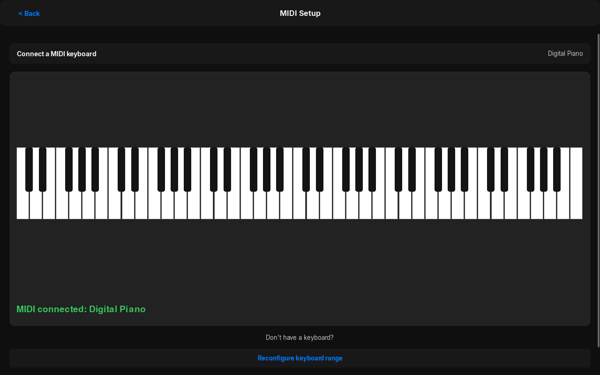

Playing
Keyboard & Microphone
Play on a MIDI keyboard, on any acoustic piano through the microphone, or on your computer keyboard.
Connecting a MIDI keyboard
Plug the keyboard in by USB, before or while Pianove is running. It is found automatically, its name appears at the bottom of the sidebar and under the on-screen keyboard (MIDI connected: …), and it reconnects by itself if you unplug it and plug it back in.

Your keyboard's range
Keyboards have 25, 49, 61, 76 or 88 keys. The first time a keyboard is connected, Pianove either recognises the model by name or asks you to press its lowest and then its highest key. The on-screen keyboard in lessons then matches the one in front of you.
To do it again, for example with a different keyboard, open Settings → Keyboard & Sound → MIDI Setup → Reconfigure keyboard range.
Silent keyboards
Many controller keyboards make no sound of their own. Turn on Settings → Keyboard & Sound → MIDI Sound Output and Pianove plays a sampled grand piano for every key you press, with the sustain pedal. See Piano Sound.
Hear My Piano: the microphone
No MIDI cable? Pianove can listen to an acoustic piano, upright or grand, through the computer's microphone and work out which keys you play. Turn on Settings → Keyboard & Sound → Hear My Piano (Microphone), or choose Acoustic piano: use the microphone during setup.
- Sensitivity: the slider that appears below the switch. Raise it if soft notes are missed; lower it if notes appear that you didn't play.
- It knows what comes next: during a lesson Pianove tells the detector which keys are expected, so the right note is recognised faster and reliably.
- Any tuning: an old piano that is a little flat is still heard on the right keys.
How it works: every 10 ms the last fraction of a second of sound is turned into a spectrum and explained as a mix of the 88 keys' own sound (measured from sampled grand pianos). A key counts as played when its share rises sharply and stands clear of the overtones of louder keys. All of it runs locally in numpy; no recording ever leaves your computer.
No instrument: computer keyboard and mouse
Without a MIDI keyboard or a piano, your computer keyboard plays notes, the way music programs do. The keys are matched by position, so the layout works the same on QWERTY and QWERTZ keyboards:
| Keys (QWERTY) | Play |
|---|---|
| A S D F G H J K L ; ' | White keys from middle C: C D E F G A B C D E F |
| W E · T Y U · O P | Black keys: C♯ D♯ · F♯ G♯ A♯ · C♯ D♯ |
| Z / X | One octave down / up |
On a German keyboard the black keys are W E T Z U O P and the octave keys Y / X. You can also click the keys of the keyboard on screen. Both work in lessons, songs, sight-reading and the keyboard setup, and always sound, since there is no instrument to make the sound.
Troubleshooting
| Problem | Try this |
|---|---|
| “No MIDI keyboard: play with your computer keys …” | Check the cable and that the keyboard is on. Some keyboards need to be switched to USB-MIDI mode. Close other programs (a DAW) that may hold the port. |
| The on-screen keyboard is shifted | Reconfigure the range in Settings → MIDI Setup, or check that the keyboard's octave/transpose buttons are at zero. |
| Keys play no sound | Turn on MIDI Sound Output and check the volume. |
| “No microphone found” | Allow Pianove (your terminal or Python) to use the microphone in your system's privacy settings, and install sounddevice. |